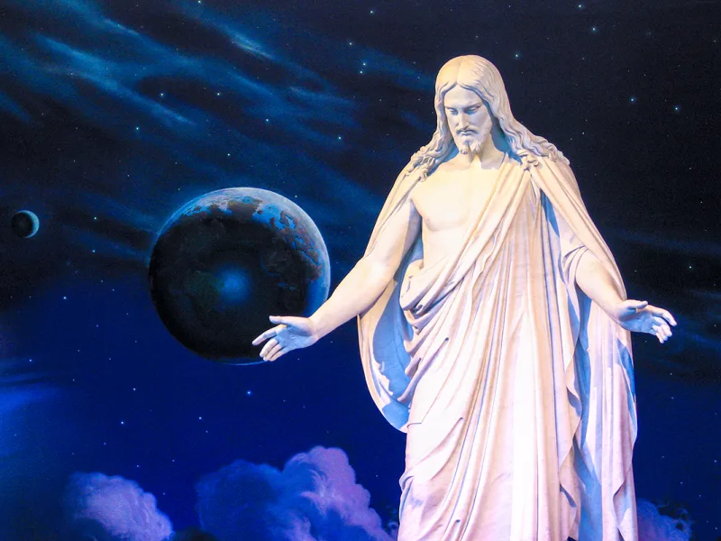

Jesus 'attained the rank of Godhood', says Talmage
UnrefutedNo good counter-argument has been published by LDS scholars.
What is taught
That Jesus is the firstborn spirit child of Heavenly Father and heavenly parents. Gospel Principles, chapters 2 and 3, says so.
That makes him the literal elder brother of every human, of the same kind as us. James Talmage's Jesus the Christ says he "attained the rank of Godhood" before this life.
What the Bible says
John 1:3 — "All things were made by him; and without him was not any thing made that was made." That scope leaves Christ outside the category of made things. Colossians 1:17 says "he is before all things." Micah 5:2 says his goings forth are "from everlasting." Hebrews 13:8 says he is the same yesterday, today and forever.
John 8:58 has him say "before Abraham was, I am."
Their answer, at full strength
He did not become divine late. He is Jehovah, the God of the Old Testament — The Living Christ, 2000, says so directly.
D&C 93:21 calls him the Firstborn who was in the beginning with the Father, and Moses 1:33 has him creating worlds without number. On Colossians 1:15 they note Paul himself calls Christ "the firstborn of every creature." And FAIR argues the Greek at Colossians 1:16 means organising existing material, not making something from nothing.
Where that runs out
Colossians 1:16 explains its own firstborn line: "for by him were all things created." He is first over creation because he made it. And the deeper problem is not a proof text.
Even granting that Christ was Jehovah before the world, this makes him a begotten spirit sibling whose divinity was attained. That is a different kind of being from the eternal Creator who came down.
How strong is this argument?
Strong for you. But say the strong half of their case first — the Jehovah identification is real and most Christians do not know they teach it.
Then ask about John 1:3.
What to say
"Was there ever a time when Jesus was not God?"


How they answer this — at its strongest
He is Jehovah, God before the world was made, and Paul calls him the firstborn.
Apologists reply that Jesus did not become divine late, or out of nothing that matters. He is Jehovah, the God of the Old Testament. The Living Christ of 2000 says so directly. He was fully divine before creation.
He created 'worlds without number' under the Father's direction at Moses 1:33. And D&C 93:21 calls him 'the Firstborn' who was 'in the beginning with the Father'.
On Colossians 1:15 they note that Paul himself calls Christ 'the firstborn of every creature'. FAIR argues that the Greek at Colossians 1:16 means organising material that already exists, not making from nothing. So 'all things were made by him' need not take in eternal spirit-matter, or Christ's own spirit.
Firstborn status, they argue, means first place and heirship, as at Psalm 89:27. Latter-day Saint theology affirms that to the full.
The verdict
Strong for you, but give the Jehovah half first, then ask about John 1:3.
The doctrine is documented from current official sources, and the clash is structural rather than a fight over one verse.
Grant that Christ as Jehovah was divine before the world was. This theology still makes him a begotten spirit brother of humanity whose divinity was attained. That is one of us who rose, rather than the eternal Creator who came down.
John 1:3 sweeps everything in. Colossians 1:17 says 'he is before all things'. Neither leaves a class of self-existing spirit-stuff, or sibling spirits, that Christ did not make. The Latter-day Saint reading has to carve out exactly what the text shuts off.
And the 'firstborn of every creature' point fails against verse 16's own reason: 'for by him were all things created'. He is first over creation because he made it.
Sources
- Gospel Principles, ch. 2 'Our Heavenly Family' (churchofjesuschrist.org)
- Guide to the Scriptures: 'Firstborn'
- The Living Christ: The Testimony of the Apostles (First Presidency/Twelve, 2000)
- MRM: The Relationship Between Jesus and Lucifer in a Mormon Context